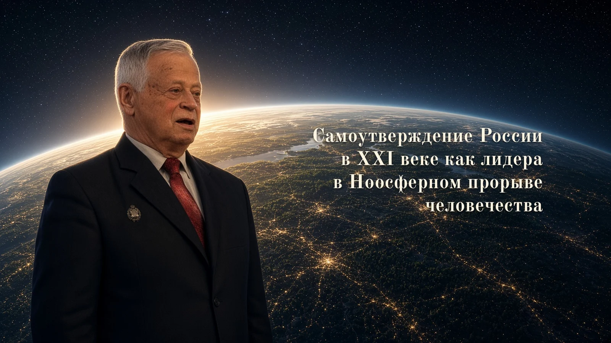

1.Введение
Предлагаемая автором читателю его статья под таким названием была опубликована, почти 16 лет назад, 30 декабря 2010 года в Санкт-Петербургской еженедельной газете «Новый Петербург» (№50). Автор решил вторично её опубликовать, поскольку её положения в наше время, когда так называемый «Запад», а вернее – система глобального империализма строя мировой финансовой капиталократии во главе с США (на фоне ускоряющихся процессов экологической катастрофы этой системы, воспроизводящей себя за счет колониальной эксплуатации стран за пределами «Запада») ведет гибридную войну против России с целью расчленения России и уничтожения русского народа (который Аллен Даллес еще в 1945 году в своей опубликованной доктрине холодной войны против СССР, которую я назвал «Манифестом русофобии Аллена Даллеса», назвал «самым непокорным народом»), с тем, чтобы поставить природные ресурсы России под своей прямой контроль и за счет потребления этих ресурсов продлить свое существование, именно, как империалистической и экономико-колониальной системы, на Земле, – приобретают еще большую актуальность.
Статья автором представляется читателю с правками, небольшими вставками и с введенной им рубрикацией.
2.Основания постановки проблемы «Самоутверждения России в XXI веке как Лидера в Ноосферном Прорыве человечества»
Ю.М.Осипов, президент академии философии хозяйства, глава научной школы по философии хозяйства, не имеющей аналогов в мире, директор Центра общественных наук, к 20-летней годовщине со дня основания этого Центра, 16 лет назад, в 2010-м году, провел международную научную междисциплинарную конференцию под названием «Самоутверждение России: социум, экономика, политика»,и выдвинул тогда ряд тезисов в аннотации ее замысла.
Их можно свести к следующим формулировкам:
1.У России, по ходу ее «перестроения», появился шанс «выйти на путь окончательного самоутверждения как новой великой державы, способной к целостному воспроизводству и разностороннему развитию, к эффективному участию в солидарном планетарном обществе»[1]» (выдел. мною, С.А.);
2.Первый тезис, если даже и не соответствует реальности, то, по крайней мере, он имеет характер долженствования, т.е. императива, по отношению к развитию России, потому что, «если это и не совсем так, то как раз так или примерно так должно было бы быть, а потому подобное идеальное проектирование не просто возможно, но и необходимо»[2].
3.Третий тезис вытекает из первых двух и развивает их. Он заключается в положении, что «Россия реальная идет за Россией идеальной, – и последняя хотя и не совладает с первой, но в ней сначала телеологически, а потом и эсхатологически непременно присутствует. Отсюда и стремление воображающего интеллекта к опережению, пусть и несколько утопическому, не самой удовлетворительной действительности»[3] (выдел. мною, С.А.). Последний тезис явно имеет, на моем языке, системогенетическое содержание, отражает действие таких, например, законов системогенетики, сформулированных мною, как закон системного наследования и закон телегенеза (действующий в процессе системогенеза)[4]. Иными словами, Будущее, в определенном смысле вырастает как из настоящего и прошлого, так и из желаемого Будущего, и закрепляется с помощью общественного идеала, в данном случае с помощью «России идеальной».
4.Сама тематика конференции, посвященная «самоутверждению» России, продолжала рефлексию V Малого университетского форума (и это важно!), которая была закреплена в виде темы «Российское перестроение: социум, политика, экономика»[5]: от перестроения – к самоутверждению.
Нужно отметить следующие важные положения, которые были зафиксированы на V Малом университетском форуме, коль скоро мы закрепили эту преемственность:
1.Россия находится в состоянии системного кризиса, который, по Ю.М.Осипову,имеет отношение не столько «собственно к «физике» бытия», сколько «к его метафизике, к духовно-идеальной сфере»[6], что совпадает и с выводом И.А.Гундарова,который в своих статистико-демографических исследованиях доказывал, что 80% причинно-следственных связей в объяснении феномена вымирания русского народа и в целом российского общества, начиная с 1993 года, лежат в духовно-нравственной области[7], и связано это явление с потерей людьми общественного идеала, смысла жизни и с неприятием системы «реформаторских», по сути – «западных», ценностей, вращающихся вокруг прибыли, наживы, «бабла», наслаждений, потребительства, конкуренции, рынка и т.п., в «пространстве», которых потеряны человек, культура, образование, отвергнута вся историческая логика развития русской культуры и «русской цивилизации», которая, как «ядро», служит центром кристаллизации оснований и императивов развития российской цивилизации[8]. Ю.М.Осипов фиксацию этого цивилизационного отрицания России, ее истории нынешним экономико-рыночно-либеральными реформами формулирует по-своему, называя его «нарушением, искажением и поражением самой Идеи России»[9].
2.В результате рыночных реформ произошло превращение России в «фундаментально-кризисную страну»[10].Созданная «нефтедолларовая экономика» представляет собой «выдающуюся из возможных экономик - симулякров»[11]. При этом, «мировой рынок в целом работает если и не прямо против России (мое замечание: по моей оценке – прямо против России, потому что Россия самая «холодная цивилизация» в мире, С.А.), то уже никак не на Россию»[12].
Вхождение России в ВТО этот процесс борьбы «мирового рынка» против России проявил в полную силу.
3.Россия, по своему цивилизационному качеству, – «не страна по своей сути, а целый мир»,который многие, в том числе – Ю.М.Осипов,в том числе и группа русских мыслителей, группирующихся вокруг газеты «Завтра», называют «империей»,противопоставляя имперскую философию философии либерализма. С этой антиномий можно с оговорками согласиться, если под «империей» понимать евразийский союз народов, сложившийся на огромной территории Российской Евразии, под водительством русского народа, а не колониальный вариант закабаления народов, что было характерно для классических империй, начиная от Римской империи и кончая Великобританией и нынешней империей, претендующей на всемирное господство, – Соединенными Штатами. Против империалистической «имперскости» США вели борьбу в своих «Размышлениях» Фидель Кастро и в целом целый ряд руководителей латиноамериканских стран во главе с Уго Чавесом.
Но поскольку смысл слова «империя» наполнен империалистическим содержанием, то использование этого слова в качестве «идеологического локомотива», который втянет Россию в Будущее в виде нового расцвета ее могущества, вряд ли является удачным приемом и может сыграть в истории злую шутку с адептами имперской концепции.
А вот то, что Россия – это «целый мир»,в котором народы научились исторически жить в мире и заниматься со-созиданием, – это положение является исторической истиной, которая потом нашла свое дальнейшее развитие в истории СССР, в опыте героического подвига советского народа в Великой Отечественной войне 1941 – 1945гг. Причем, этот мир – особый, действительно иной, противостоящий рыночно-капиталистическому архетипу западной цивилизации, – мир реализующий особый синтез Востока и Запада, Азии и Европы, Юга и Севера, в котором все время вершится Историей некое идеальное опережение того состояния, в которое в конечном итоге должен прийти весь «мир человечества». Ю.М.Осипов связывает характеристику этого идеального состояния с «солидаризмом»[13], который близок понятию «соборность» (об особом значении «соборности» как характеристики цивилизационного основания России и ее Будущего говорят такие разные мыслители, как, например, В.Н.Сагатовский, В.В.Кожинов, О.А.Платонов[14])и который автор связывает с космическим законом кооперации, противостоящим закону конкуренции и наиболее проявленным на просторах российской цивилизации, с Ноосферным, Духовным, Экологическим Социализмом[15].
4.«Главное для России – борьба внутренняя с самого собою, за себя, – и эта борьба предполагает перестроение России согласно проекту Новой России, для чего потребно прежде всего концептуальное преображение России!»[16]. Данное осиповское положение справедливо. Только остается один важный вопрос – на каких основаниях и предпосылках может быть осуществлено это «перестроение», а вслед за ним и «окончательное самоутверждение» России в качестве великой державы, ведь мы же испытали на себе «перестроение» СССР, получившие название «перестройки» по М.С.Горбачеву, а затем рыночное «перестроение», получившее название «шоковой терапии» по Е.Т.Гайдару и «приватизации» по А.Б.Чубайсу, которые превратились в «катастройку» по С.Кургиняну, и которые привели к нынешней системной катастрофе и к роковой черте самоуничтожения России.
Перечень «рефлексий», близких по смыслу, на заданную проблему самоутверждения России, можно было бы продолжить. Можно упомянуть таких авторов, как М.Делягин, С.Ю.Глазьев, А.А.Зиновьев, В.П.Казначеев, С.Г.Кара-Мурза, М.Калашников, Н.Н.Моисеев, Б.М.Ханжин[17] и другие.
Ниже автор попытается сформулировать систему положений, которые бы отвечали на «Вопрос» – в чем состоит смысл окончательного самоутверждения России, которое, конечно, есть только историческое самоутверждение, неотъемлемое от ее исторической самоидентификации, и каким наполняется содержанием стратегия самоутверждения России в XXI веке?
Фактически мы встречаемся с рядом близких по своему смыслу категорий – «самоидентификация», «самоутверждение», «русская идея» или «национальная идея» России, которые на смысловом поле социокультурной и цивилизационной самоидентификации России, которая никогда не прерывалась, и которая и есть духовно-культурное и материальное творческое самосозидание, перетекают друг в друга. Это самосозидание и самоутверждение есть История России как евразийской, общинной, самой «холодной» цивилизации в мире (именно – самой «холодной», поскольку в близкой по климато-географическим, природным условиям к России – Канаде хозяйствующее население сосредоточено на юго-восточных и частично юго-западных «территориях», где условия для сельского хозяйства близки к условиям срединной и южной Украины: «от широты Киева» до «широты Одессы»).
В макете показано начало статьи.